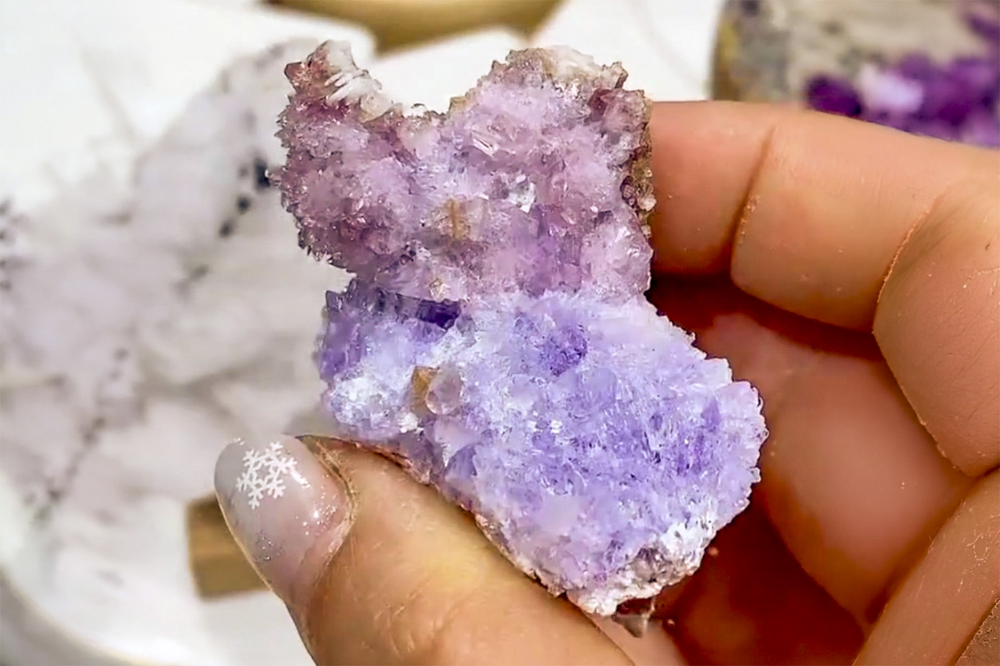

Creedite with Minor Fluorite
"Bright blue and lavender Creedite"
VI-09089
Qinglong Mine (Dachang Mine), Dachang Sb ore field, Qinglong County, Qianxinan, Guizhou, China
Purchased 1/7/2026 from 7 Minerals Mine for $25.00
Core Collection • In Collection
Details
Storage Type: Flat
Storage Location: 000 Unassigned
Size class: Miniature (0)
Dimensions: 6.0 × 4.0 × 2.0 cm
Estimated Mass: 19.2 g
Luster: Average, Vitreous